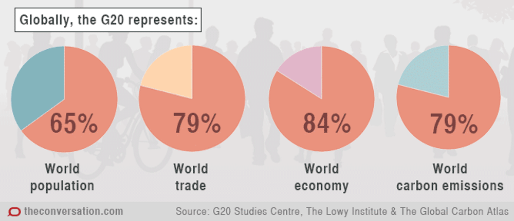
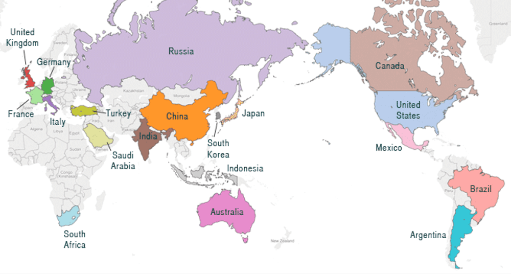

Sobre el G20
El Grupo de los 20 (G20) comenzó como un Foro de Ministros de Finanzas y Gobernadores de Bancos Centrales, formalmente creado en la Reunión de Ministros de Finanzas del G7, el 25 de septiembre de 1999.
Pie de la foto
El G20 está integrado por 19 países y un organismo multinacional que es la Unión Europea. Los 19 países son Alemania, Arabia Saudita, Argentina, Australia, Brasil, Canadá, China, Corea del Sur, Estados Unidos, Francia, India, Indonesia, Italia, Japón, México, Rusia, Reino Unido, Sudáfrica, Turquía.
Las organizaciones internacionales también participan regularmente en las Cumbres del G20. Las mismas incluyen el Fondo Monetario Internacional (FMI), el Banco Mundial, el Consejo de Estabilidad Financiera (FSB), la Organización para la Cooperación y el Desarrollo Económicos (OCDE), la Organización Internacional del Trabajo (OIT) y las Naciones Unidas (ONU).
Pie de la foto
En relación a los organismos, sólo la Unión Europea es miembro de pleno derecho del G20. Los funcionarios de las organizaciones internacionales son bienvenidos a participar en los debates previos a la cumbre.